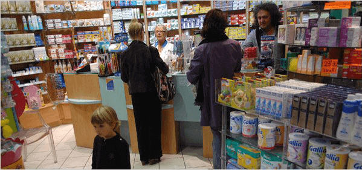
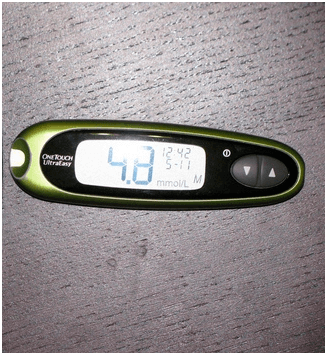

NEGÓCIOS E DOENÇAS:
Você saberá sobre DIABETES tudo o que foi escondido por
muitos anos
Categoria:Artigos úteis para diabéticos Publicado em:
Olá! Meu nome é André Lima.
Eu nunca escrevi comentários, mas eu decidi fazê-lo para pessoas, tais como eu, que estão doentes com diabetes. É porque, devido a erros médicos, quase perdi minha vida.
Tenho 35 anos, tenho uma esposa e dois filhos. Eu trabalho como cozinheiro na cantina duma escola. Há dez anos que fui diagnosticado com diabetes tipo 2. O tempo todo estava a sentir-me cansado, não podia comer direito, forçava-me a comer apenas comida saudável . Imagine isso com o meu trabalho! Além disso, constantemente tive que monitorar o nível de açúcar no sangue .
O meu dia começava com uma agulhada no dedo para medir o açúcar. Eu gastei com medicamentos milhares de euros por mês . Com o salário de um cozinheiro! Uma catástrofe! Além disso, os PREÇOS para comprimidos em Portugal aumentaram muito devido a eventos recentes.
Precisei de vender a casa de campo e o carro, emprestar dinheiro para poder pagar por todo o conjunto de remédios... Quase acabaram com a minha vida. Eu tinha enjoo o tempo todo, e em dois meses ganhei quilos em excesso. E também, virei um fardo para a minha família. Estava com medo que os meus filhos possam ter diabetes do tipo 2. .
Eu pensei que não poderia ser pior até que um dia arrisquei a minha vida inteira.
Comprei sapatos novos e, após algum tempo, passei a ter calos nos pés. Depois, eles se transformaram em feridas que não cicatrizavam. Eu não sentia dor, mas era difícil de andar, e havia uma sensação ardente em meus pés , então fui ao médico. Ele disse que havia uma alta probabilidade de surgimento de gangrena, ou seja, a minha perna poderia ser amputada!!!

Pelo que ouvi, comecei a suar frio. Eu sabia que a gangrena é bastante comum nos diabéticos, mas não pensei que eu mesmo enfrentaria isso. Como poderia viver e trabalhar sem uma perna!? Do escritório do médico eu saí com um grande medo pela minha vida e ... com uma lista de medicamentos muito caros.
Na noite do mesmo dia, eu telefonei pelo Skype para um velho amigo da escola, ele mora na América. Ele ouviu sobre a minha desgraça com problemas de saúde, que não tinha dinheiro suficiente para comprar medicamentos. Por sua vez, ele me disse que na América, uma situação semelhante está acontecendo no mercado de remédios. Os médicos lá também recomendam comprar medicamentos caros, que apenas pioram a saúde. Afinal, QUANTO MAIS PESSOAS ESTÃO DOENTES, mais ELAS PRECISAM DE COMPRIMIDOS. E a venda deles traz uma renda imensa para empresas farmacêuticas . Penso que Portugal nesta matéria também não é uma exceção, mas é que todos estão minuciosamente silenciosos sobre isso.
Perguntei ao amigo se ele sabe como na América tratam de diabetes, ele me disse que agora todo mundo está a abandonar o tratamento com medicamentos usuais e passam a utilizar suplementos naturais . A sua eficácia é várias vezes maior, e eles não causam prejuízo ao corpo, em contraste com os comprimidos. Quase todos os remédios conhecidos para diabetes são substituídos lá pelo meio especial, . Para nós, em Portugal, é difícil saber sobre isso, por isso pedi a ele que me mandasse o link para este produto.
Descobri que " " é um meio orgânico na forma de um pó. O seu principal componente é a inulina, obtida da planta Heliánthus tuberósus . Foi utilizado há séculos na medicina oriental para normalizar os níveis de açúcar no sangue. Após numerosos estudos, a ciência moderna comprovou a eficácia deste polissacarídeo na luta contra a diabetes tipo 2. E o mais importante é que a inulina em combinação com L-arginina ajuda a restaurar as células do pâncreas que produzem insulina!

”” é o único suplemento baseado neste extrato. No caso com a diabetes tipo 2, reduz a glicemia , diminui ou elimina completamente (em mais de 20% dos pacientes) a necessidade de medicamentos hipoglicemiantes , fortalece os vasos sanguíneos e regula metabolismo.
"" age melhor em combinação com a terapia de medicamentos prescrita
e como PREVENÇÃO se houver risco de desenvolvimento da doença.
Eu resolvi experimentar , já que naquele momento não tinha nada a perder, e
pedi-lhe diretamente do site do fabricante.
Pois, pela manhã eu colocava a água morna num copo, dissolvia uma colher de chá de pó e bebia em pequenas porções. Honestamente, não acreditava num milagre. E era em vão ... Uma semana depois percebi que fiquei menos cansado, gradualmente eu consegui voltar a comer a minha comida favorita . O nível de açúcar no sangue voltou ao normal (antes de começar a usar , o nível de glicemia em jejum era 9,6 , após duas semanas de uso, com o estômago cheio ele ficou 5,4 ) e as feridas na minha perna se recuperaram. Falando sobre peso, eu perdi 4,5 kg!
br>Eu não podia acreditar nos resultados ... Mas, percebi que o problema para pessoas com diabetes tipo 2 tem solução. A dor e formigamento passaram, juntamente com e a ansiedade sobre o que eu como . Parei de me preocupar com possíveis operações e injeções. JÁ NÃO PRECISO DE COMPRAR UM MONTE DE REMÉDIOS. Eu derrotei a diabetes sem uma produção de falsas empresas farmacêuticas e o conselho dos chamados assim "especialistas".

Só quis avisar que se vende apenas na Internet , já que a indústria não permite o suprimento entrar no mercado e, de todas as maneiras possíveis, tenta reduzir as suas vendas. Lembre-se de que empresas farmacêuticas não consideram você como um paciente que pode ser curado ... Eles vêem você como um cliente interno.
ECONOMIZARÁ milhares dos seus euros, que seriam usados para um monte de medicamentos de grandes empresas farmacêuticas. Seja cuidadoso, às vezes, falsificações aparecem em Portugal. Encomende SOMENTE do fornecedor oficial em Portugal, que garante a qualidade.
Espero que a minha história seja útil e salve mais de uma vida. Seja saudável!
Comentários:
Esses monstros de casacos brancos só sabem cortar! Um médico conhecido aconselhou-me experimentar este remédio PARA PREVENÇÃO! Dizem que no momento, é o melhor remédio para diabetes presente no mercado. Olhem, no meu caso, antes de usar o remédio, o meu nível de glicose era 8.7, depois de um mês ficou 5.9 APÓS A REFEIÇÃO! Continuo a tomar
Obrigado por escrever. O meu marido e eu já quase havíamos perdido a esperança ... eu li tudo, pedi o produto deste site . Depois de duas semanas ele foi examinado: de 7.9, a insulina caiu para 4.8!!!
Eu também quero escrever, já pensei que se tratou de mais um engano até que eu mesmo experimentei. Há um mês que tomava. Antes de tomar este medicamento, a insulina com o estômago vazio era de 9,8, um mês depois, com a barriga cheia, 5,9. Agora, vivo uma vida cheia!
Olá, o meu nome é Helena. Não sofro de diabetes, mas o meu pai tem diabetes tipo 2 há 15 anos. Digam-me, o que eu faço para lidar com esse problema? Eu realmente amo o meu pai, e desejo-lhe viver uma vida longa, mas eu justamente não sei o que farei se de repente ... Aconselhem-me como posso ajudá-lo, ficarei muito grata
Tente dar-lhe antes das refeições e dos remédios um copo de água quente com " ". Ele não substitui ação de medicamentos convencionais, mas ajudara a diminuir o açúcar, é verdade!
Meu pai tem um problema semelhante, só que ele não injeta insulina, só toma os seus comprimidos. Ele começou a escutar a minha mãe, e começou a tomar esse suplemento junto com a dieta, assim que parou de sentir um dos dedos do pé…
É uma ferramenta económica! Estamos com muitas dividas antes de comprar, e o tratamento do meu filho custou muito para nós. No meu trabalho, um amigo meu me deu um conselho de experimentar . Eu não acreditei que isso mudaria qualquer coisa, mas resolvi seguir o conselho dele. Agora o meu filho está bem. Sabem, de 9,7, a insulina caiu para 5,9!
Eu também tinha diabetes tipo 2, era um fardo para a família. A minha irmã que é médica, encontrou um site onde o remédio e o seu efeito positivo foram descritos em pormenores. Nós imediatamente pedimos este suplemento , e era isso que me voltou à vida normal!
O meu irmão sofria de diabetes tipo 2. Estávamos em desespero, mas resolvi encomendar esta coisa. A última esperança foi justificada! A glicose, duas horas antes de comer, era de 9,8, depois de uma semana de usar o remédio em jejum ficou 5,3! Eis o link onde eu pedi .
Eu trabalho como médica numa clínica privada. Ofereceram-me vender medicamentos para pacientes para depois ganhar algum lucro, mas não podia ... Eu tive uma mãe com diabetes de tipo 2, até quando encontrei um remédio efetivo para ela. Os resultados são os seguintes: antes de tomar , a glicose com o estômago vazio era 8.7. Após 3 meses de ficou 5,9. Antes de tomar, a glicemia 2 horas após a refeição era 9,8, e 3 meses depois, após 2 horas de comer, ficou 5,2. Penso que em breve ela vai parar com os medicamentos por completo..
Mas que raiva!!! Até quando os médicos vão prescrever comprimidos caríssimos quando existem análogos baratos!?
Onde você estava antes com o seu artigo? Eu tenho diabetes… :(
Não se desespere! Para mim, " " ajuda. Posso comprovar! É só tomar esse suplemento pela manhã junto com os principais medicamentos para prevenção, e tudo se torna mais fácil
E como é que é preciso tomar ?
Eu colocava água quente na caneca, depois adicionava uma colher de chá de , mexia e bebia pela manhã em jejum. É simples. :)
Eu tomava pela manhã em vez do chpa =))) Ele diminui o nível de insulina. Tinha de manha 7,6 há três semanas atrás, mas agora, é 5,2. É verdade =))
Quem já tomou o , conte-nos, o que ele tem na composição?
Eu encomendei para mim, e na embalagem estava escrito: Fibregam, inulina, ácido cítrico, vitamina B6, B1. Eu acho que tudo é útil, não será pior com certeza.
É bom que haja uma tal opção! Eu nunca entendi por que eu deveria comprar medicamentos a preços frenéticos quando existem medicamentos baratos. Sou uma pessoa velha, em breve já vou me aposentar, não posso gastar tudo o que tenho com remédios, então, é bom ouvir estes doutores com casacos brancos, mas não se esqueça de pensar com a própria cabeça
Eu mostrei para um amigo médico, ele leu, e ficou surpreso que isso estivesse vendido em Portugal! Ele diz que todos os componentes realmente têm um efeito benéfico sobre a saúde e diminuem o nível de insulina no sangue. Para um diabético, este remédio substituirá um monte de outros medicamentos.
André, por favor, conte-nos sobre os teus resultados
Tomei durante duas semanas. De 7,1, o açúcar caiu para 4,8. Definitivamente preciso de continuar!!!
P.S. É muito importante para mim saber o que você pensa sobre o " ". Se você já experimentou, compartilhe as suas impressões nos comentários abaixo: